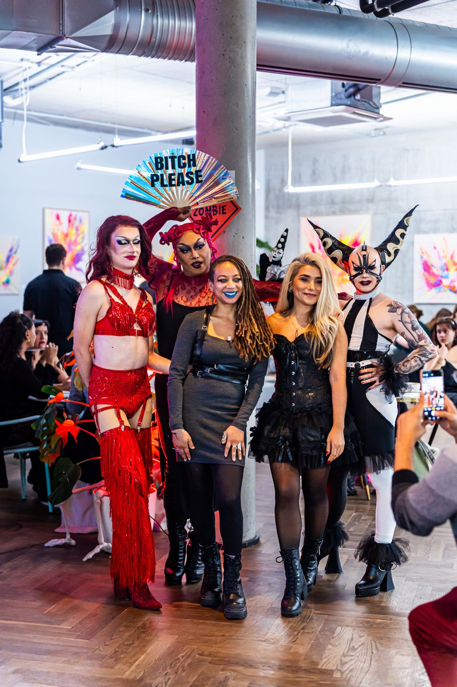
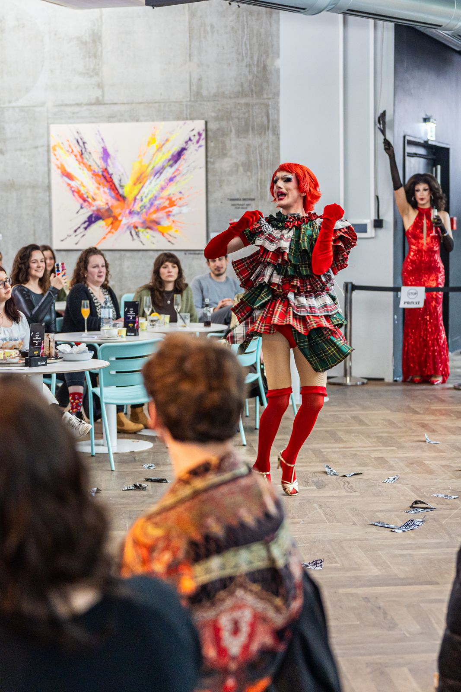
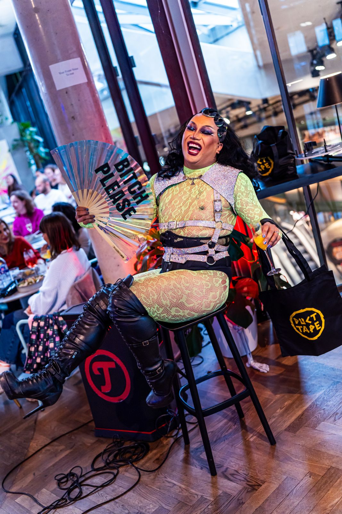

Drag brunch in Berlin
The drag brunch by DUCT TAPE, together with fritz-kola, turns weekend brunch into the highlight: several show blocks with drag performances, challenges and giveaways, high above Neukölln on the rooftop of The Dawn.
Entry is free.
© Florian Wiecher
Upcoming drag brunches
-
31.10.SaturdaySat12–3 pmBook a table
-
15.11.SundaySun12–3 pmBook a table
-
13.12.SundaySun12–3 pmChristmas EditionBook a table
Fritz-Kola Drag Brunch
The Dawn Neukölln · with EMI, Rachel Intervention and Amy Strong · Free Entry
How the Drag Brunch works
From 12 to 3 pm, food and stage take turns. Drag queens from DUCT TAPE and guests from the Berlin drag scene perform in several show blocks, with small audience challenges and giveaways in between. Because the performances run through the whole afternoon, it is worth coming for breakfast as much as for a late drink.
Food is ordered à la carte from the menu of The Dawn. Together with fritz-kola there are dedicated drink specials. Every edition has its own theme, such as Halloween, Winter or Christmas.




Drag brunch FAQ
Is there an entry fee?
No, entry is free. You only pay for food and drinks, ordered à la carte.
Do I need to book a table?
Booking via OpenTable is recommended. Without a booking a seat cannot be guaranteed.
Where exactly is the drag brunch?
At The Dawn Neukölln on the top floor of KALLE, Karl-Marx-Straße 101, 12043 Berlin. Take the lift to the top floor.
Can I come later?
Yes. The show blocks are spread across the whole afternoon from 12 to 3 pm, so late arrivals still see drag performances.
Can I book a drag brunch for my own event?
Yes. DUCT TAPE also brings the format to company parties, private events and other venues. Requests go through the booking form.
A drag brunch for your event?
The format can also be booked for company parties, private events and venues.
Request a booking